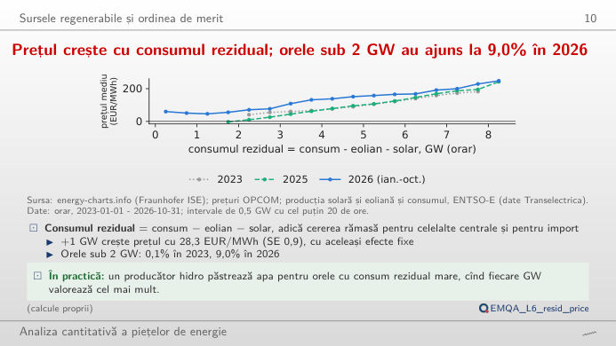
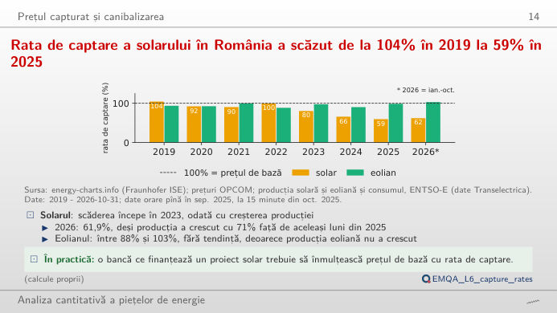
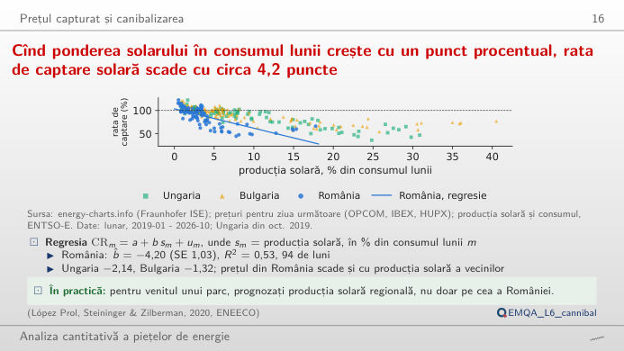
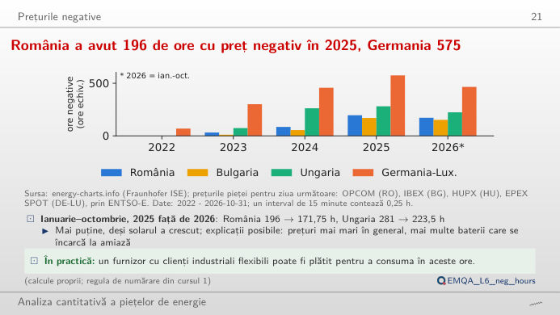
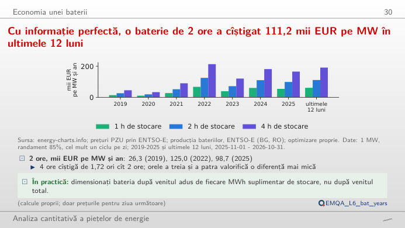
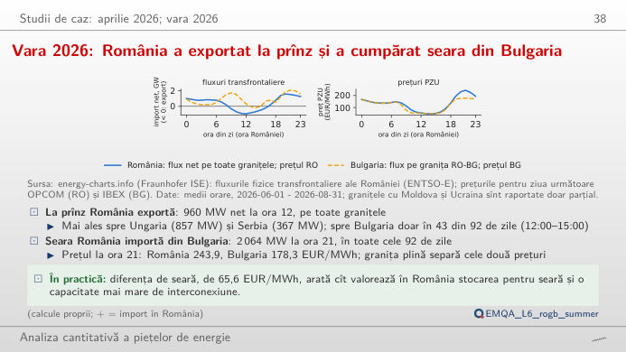

În stînga este slide-ul din curs, în dreapta aceeași figură, recalculată în browser din datele cursului (data/clean) cînd modificați un control. Butonul ▶ modifică parametrul principal pas cu pas. Sub fiecare figură: o sinteză numerică, o întrebare pentru sală și Quantlet-ul cu codul figurii.
Sursele regenerabile și ordinea de merit · Prețuri de captură și canibalizare · Prețuri negative · Economia unei baterii · Studiu de caz: vara lui 2026, România și Bulgaria
Sursele regenerabile și ordinea de merit
Prețul crește cu consumul rezidual; orele sub 2 GW au ajuns la 9,0% în 2026

Răspuns
În aproximativ 9% dintre orele din 2026 (pînă la data-limită), față de 0,1% în 2023; prețul mediu în aceste ore este de circa 51 EUR/MWh, față de circa 192 EUR/MWh cînd consumul rezidual depășește 6 GW. Pe 2023–2026, o regresie cu efecte fixe de lună, oră și zi a săptămînii dă +28,32 EUR/MWh pentru fiecare GW de consum rezidual (t = 32,1). Norul de puncte este larg: consumul rezidual explică o parte mare a prețului, dar și piețele vecine, hidrocentralele și prețurile combustibililor îl mișcă.
Prețuri de captură și canibalizare
Rata de captare a solarului în România a scăzut de la 104% în 2019 la 59% în 2025

Răspuns
Pentru că producția solară este concentrată în aceleași ore de la amiază, iar pe măsură ce capacitatea a crescut, acele ore au devenit cele mai ieftine ale zilei (efectul de ordine de merit al centralelor înseși). În 2025, solarul a obținut 64,2 EUR/MWh, față de un preț de bază de 108,2 EUR/MWh, un discount de 43,9 EUR/MWh. Eolianul, distribuit mai uniform între zi și noapte, păstrează o rată de captură mult mai mare: schimbați tehnologia.
Cînd ponderea solarului în consumul lunii crește cu un punct procentual, rata de captare solară scade cu circa 4,2 puncte

Răspuns
Cu aproximativ 4,2 puncte procentuale (panta −4,2, R² = 0,53 pe 94 de luni; eroarea standard 1,03 în curs, robustă la autocorelare). Aceeași pantă este −1,32 în Bulgaria și −2,14 în Ungaria. Mutați începutul ferestrei: panta estimată numai pe lunile recente este determinată de ponderile record ale solarului din 2025–2026 (pînă la 17,8% din consum în august 2026, cea mai mică rată de captură 44,3% în martie 2026).
Prețuri negative
România a avut 196 de ore cu preț negativ în 2025, Germania 575

Răspuns
La mijlocul zilei (aproximativ 10:00–16:00) în lunile de primăvară, cînd producția solară este mare, consumul moderat și hidrocentralele funcționează. Harta numără ore echivalente (un interval de 15 minute contează 0,25 h); panoul din dreapta arată media ponderată cu durata a prețurilor negative, pe luni. Alegeți 2022: România nu a avut preț negativ înainte de mai 2023.
Economia unei baterii
Cu informație perfectă, o baterie de 2 ore a cîștigat 111,2 mii EUR pe MW în ultimele 12 luni

Răspuns
Nu: 165,2 mii EUR, adică de 1,67 ori mai mult. Orele suplimentare de stocare cumpără energie în ore mai puțin ieftine și o vînd în ore mai puțin scumpe, deci fiecare MWh de capacitate cîștigă mai puțin (iar programul real se decide pe prognoze, nu pe prețuri cunoscute: cu profilul mediu al săptămînii anterioare, cursul păstrează circa 85% din venitul cu prețuri cunoscute). Mutați randamentul: de la 75% la 95%, venitul bateriei de 2 ore din România crește cu 39–46% în 2019–2022, dar doar cu 21–22% în 2024–2026, cînd golurile adînci de la amiază (pînă la prețuri negative) fac prețul de cumpărare mic față de cel de vînzare, deci pierderile costă mai puțin.
Studiu de caz: vara lui 2026, România și Bulgaria
Vara 2026: export la prînz, import seara din Bulgaria

Răspuns
Din Bulgaria, în toate cele 92 de zile: la ora 21:00 a României, fluxul mediu pe granița România–Bulgaria a fost de 2.064 MW spre România. La acea oră, prețul mediu din România a fost 243,9 EUR/MWh, iar cel din Bulgaria 178,3 EUR/MWh (diferența 65,6 EUR/MWh): interconexiunea era congestionată, altfel cuplarea piețelor ar fi egalizat cele două prețuri. La amiază, ambele prețuri au fost de circa 50 EUR/MWh, iar România a exportat, mai ales spre Ungaria (857 MW) și Serbia (367 MW).
Prețuri pentru ziua următoare: OPCOM PZU (Piața pentru Ziua Următoare, România), IBEX (Bulgaria), HUPX (Ungaria), EPEX (Germania–Luxemburg); producția, consumul și fluxurile fizice transfrontaliere (date ENTSO-E, Rețeaua europeană a operatorilor de transport și sistem pentru energie electrică): energy-charts.info (Fraunhofer ISE). Prețuri orare pînă în septembrie 2025 și pe 15 minute din 1 octombrie 2025 (un sfert de oră contează 0,25 h). Bateria: 1 MW, cel mult un ciclu complet pe zi, prețurile pentru ziua următoare cunoscute perfect, programul optim al fiecărei zile de livrare prin programare liniară (regula din curs). Date pînă la data-limită a cursului (31 octombrie 2026).